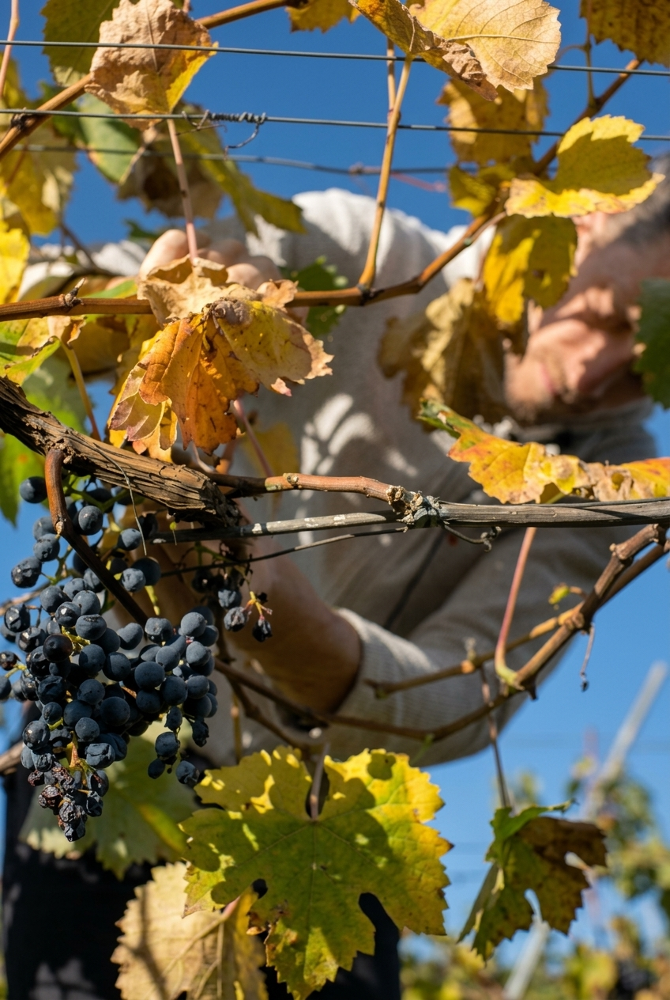

Radici profonde
La storia di Budin riparte nel 2015, quando Gregor decide di lasciare il proprio precedente lavoro e dedicarsi alla vite.
Non si tratta di iniziare da zero, ma di tornare a una tradizione che apparteneva già alla famiglia.
Il primo passo è stato recuperare i terreni dei nonni materni e paterni, affiancandoli ad alcuni vigneti in affitto. Barbatella dopo barbatella, insieme ad Alice, Gregor ha costruito un’azienda familiare profondamente legata a Sales e al Carso.
“Un progetto giovane, costruito su radici profonde.”
Nel 2020 prende forma una nuova struttura affacciata sui vigneti. Al piano superiore si trovano gli spazi dedicati all’accoglienza; sotto terra, scavata nella pietra carsica, si sviluppa la cantina.
Alla fine del 2022 apre anche l’agriturismo, nato dall’esperienza della vecchia osmiza di famiglia. Oggi Budin riunisce vino, territorio e ospitalità in un unico luogo.
Ritorno alla viticoltura e recupero dei terreni di famiglia.
Inizio della nuova struttura affacciata sui vigneti.
Apertura dell’agriturismo alla fine dell’anno.
Vino e ospitalità nel cuore del Carso.
La famiglia, la terra
Dal vigneto all’ospitalità.
Circa 3,5 ettari tra proprietà e affitto, una cantina su due livelli sotterranei e tre camere per accogliere chi vuole conoscere il Carso da vicino.